Building the tools behind the things you love
Platform engineer and graphics programmer who's shipped tools and systems across DreamWorks, Blizzard, and XBOX - spanning film lighting pipelines, AAA engine graphics, and platform developer tooling. Most at home in rendering, engine, and developer-tools work.
Experience
From hands-on rendering and pipeline work to platform-level systems design and partner engineering - each role built on the last.
Microsoft - XBOX
DreamWorks Animation
Blizzard Entertainment
Twitch Interactive
Intel Corporation - Firmware Security
Intel Corporation
University of Kentucky - Computer Vision
University of Kentucky
University of Kentucky - Cloud Infrastructure
University of Kentucky
Production Credits
Feature films and game-engine work I contributed to directly, plus AAA live-service titles I support as an XBOX platform partner - sustaining their live service and building platform solutions around their needs across the company.
Microsoft - XBOX (Platform Partner)
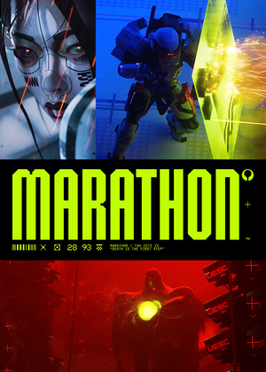
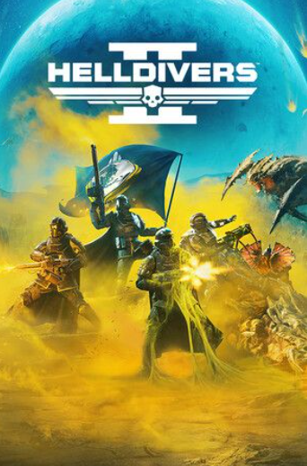
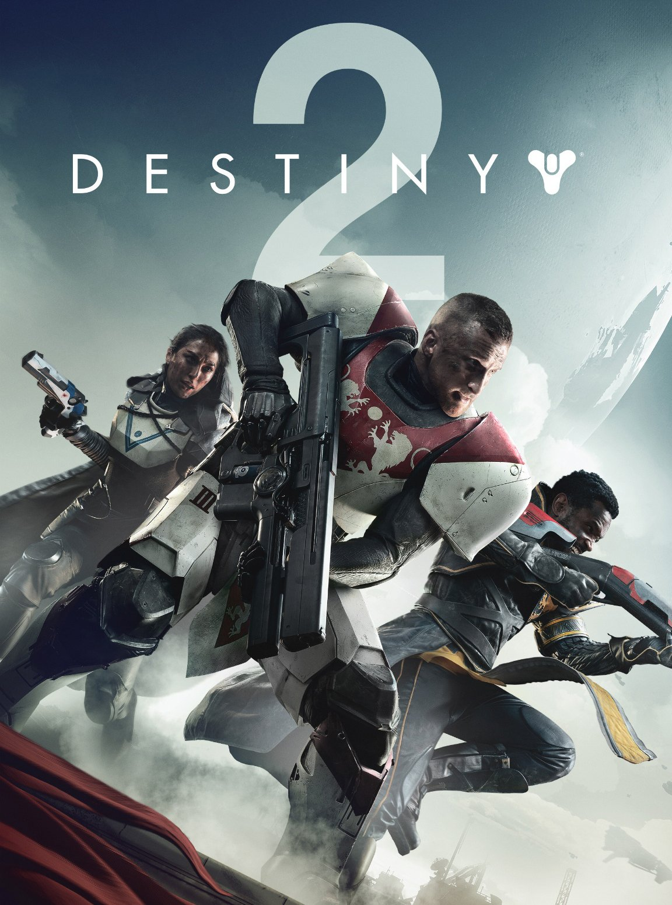
DreamWorks Animation (Feature Film)
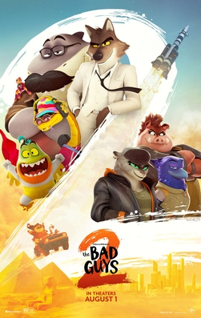
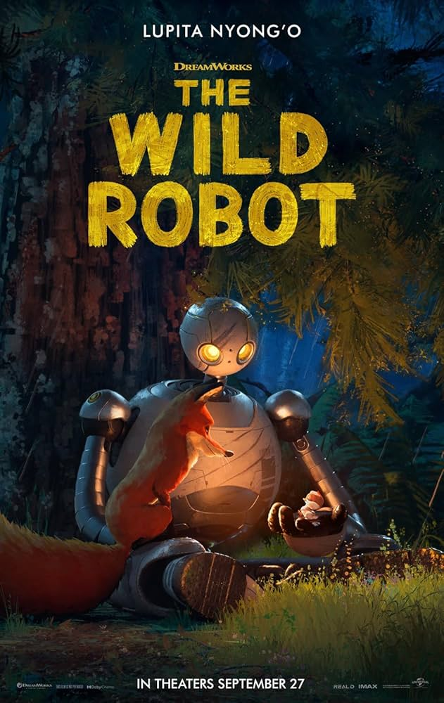

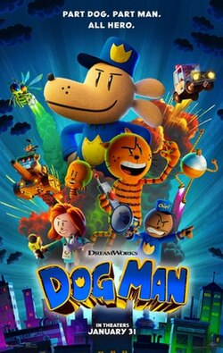
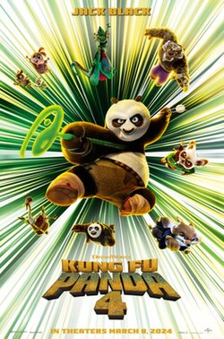
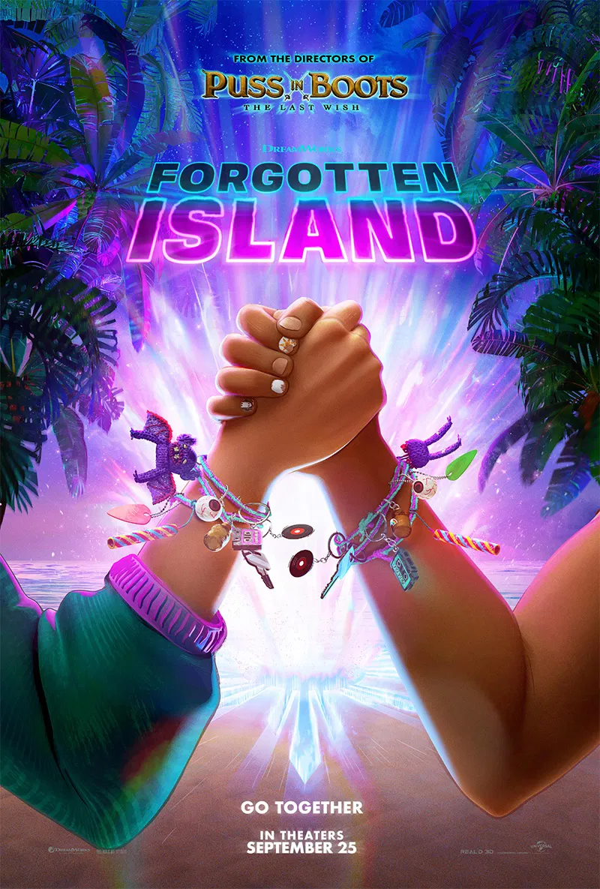
Blizzard Entertainment (Game Engine)
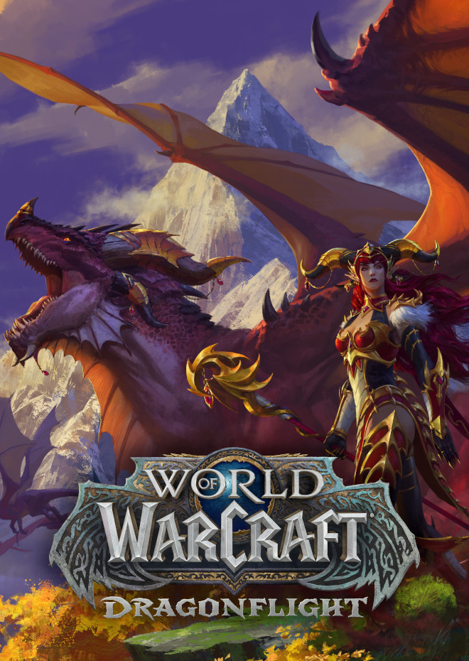
Twitch Interactive (Mobile Platform)
Selected Project Media
A curated wall of the visuals I care about most - real frames from the DreamWorks features I helped light, shown next to the engines, renderers, and simulations I build on my own time.
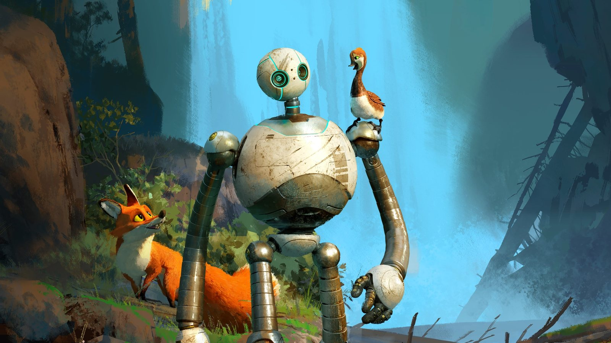
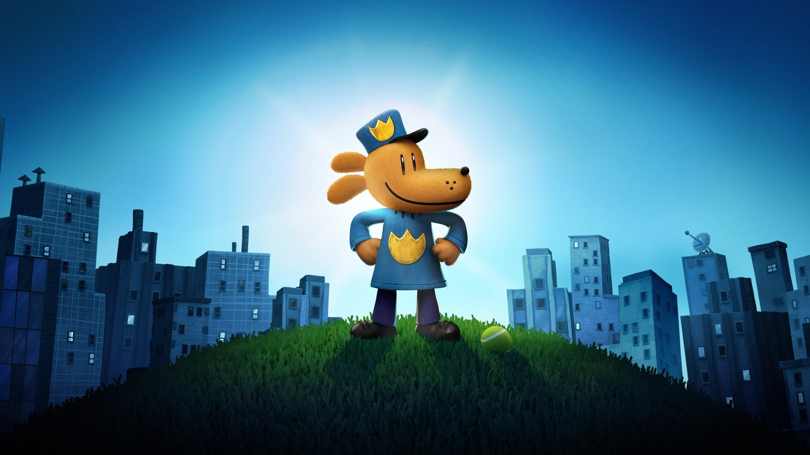
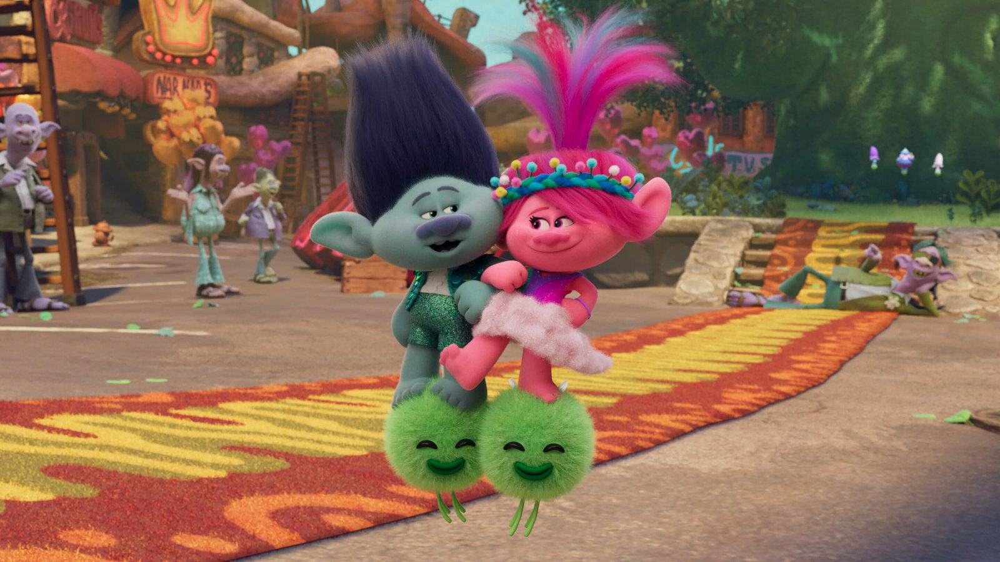
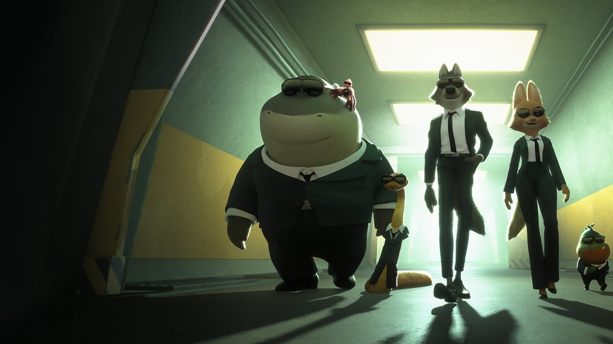
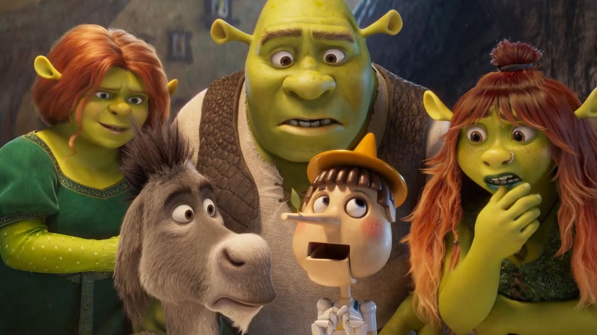
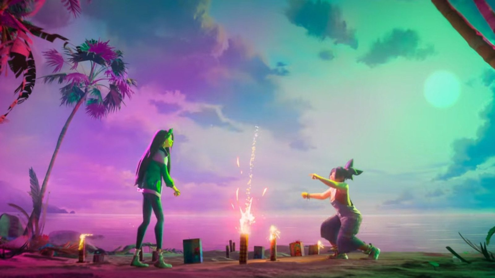


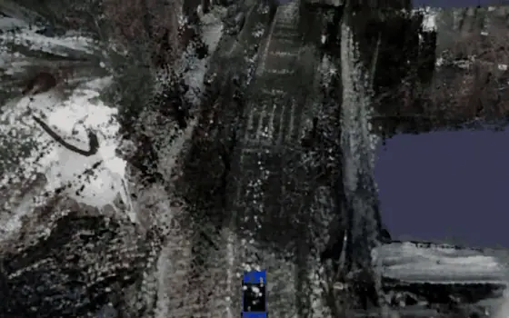


Film stills © DreamWorks Animation / Universal Pictures, sourced via TMDB and shown to credit features I contributed to as lighting-tools crew - not personal work product. Trailer links open the studios' official YouTube channels.
Contact / Connect
Always happy to connect - feel free to reach out about work, collaboration, or just to say hello.
Archive
Older projects, graphics experiments, and blog posts from earlier in my career - preserved for reference.
Personal project history.